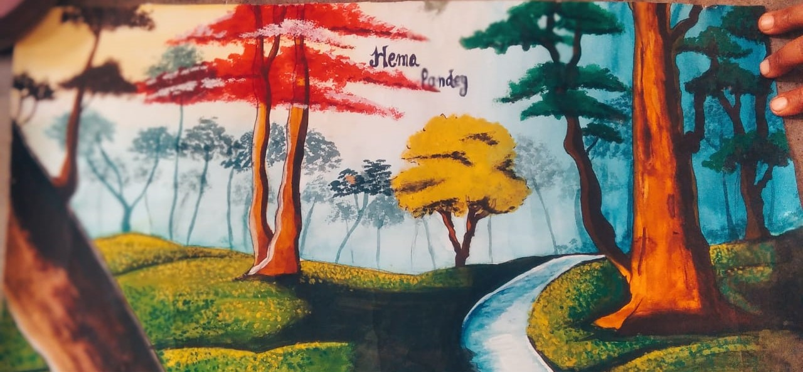
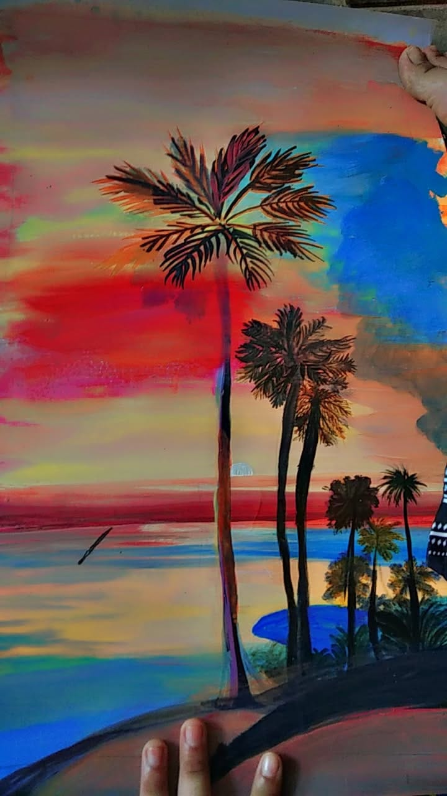
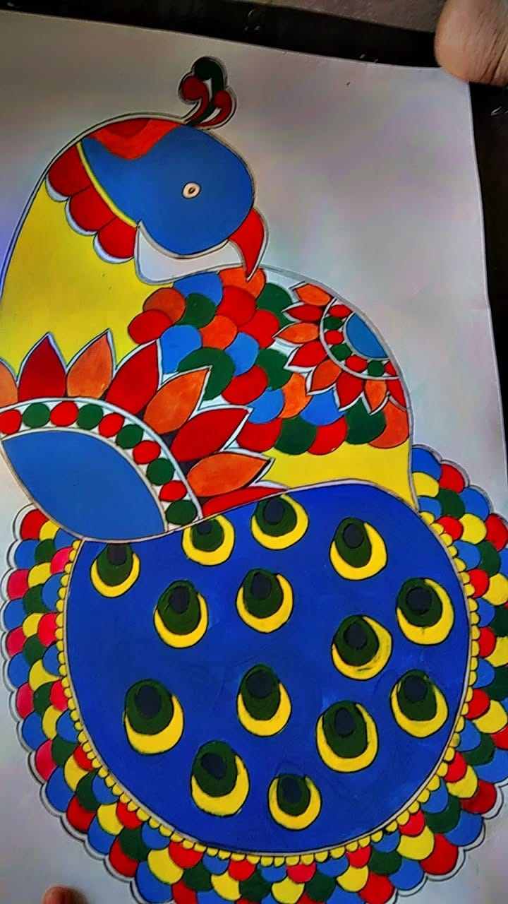

🖼️ Painting Gallery
Every painting you see here is made by me—by hand, by heart. Some people think I bought them. Some say, “This doesn’t look handmade.” But I’ve painted each one myself, from the bold strokes of the blue horse to the quiet bloom of hibiscus. Even my painting teacher said I have something special. This gallery is not just a showcase—it’s proof of what I feel, what I see, and what I believe I can create. I paint to preserve emotion, to honor silence, and to tell stories that words cannot.

A wild spirit in motion—freedom gallops in cobalt blue.

Stillness carved in stone—where silence meets devotion.

A path between dreams—where leaves whisper forgotten stories.

Love eternal—painted in myth, melody, and marigold light.

Grace in geometry—Ganesha dances through tradition and rhythm.

Strength in stillness—noble gaze carved from quiet power.

Ripples of life—where motion glows beneath the surface.

Time etched in stone—Konark’s wheels turn through centuries.

Petals and porcelain—an ode to quiet beauty and balance.

From birth to bloom—each panel a chapter in the soul’s journey.

Sun-kissed growth—yellow blossoms reaching for the sky.

A village memory—red roofs and palm shadows by the lake.

Bold and blooming—hibiscus fire against a gentle breeze.

Earthy abundance—kitchen tales told in crimson and ochre.

Simple offerings—fruit and form in quiet harmony.

Simple offerings—fruit and form in quiet harmony.

Simple offerings—fruit and form in quiet harmony.

Simple offerings—fruit and form in quiet harmony.